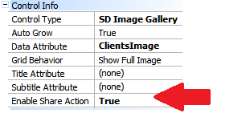
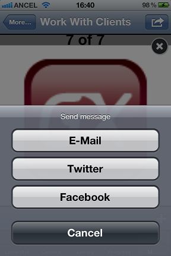
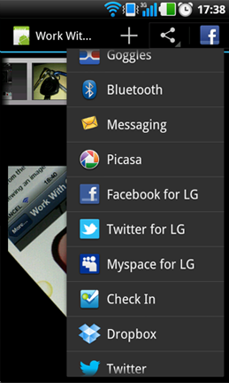
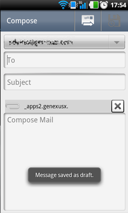

HowTo: use share action for the Image Gallery
One of the properties of the Image Gallery control is to enable share Action. 
This will add a button to allow the user to share one or a selection of images of the image gallery: When viewing an image you can tap on the share button:
The following dialogue will appear:   Email example:  Twitter example:
To share with facebook first follow this link: HowTo: Register a Facebook App for Smart Device interaction. After having everything configured on the KB to interact with Facebook the app should be able to post an image on the user's facebook wall. Take into consideration that the images that can be posted to facebook has to be accesible in a public URL.
ConsiderationsWhen using iOS, the Share option is enabled if any of the following is set on the device:
|